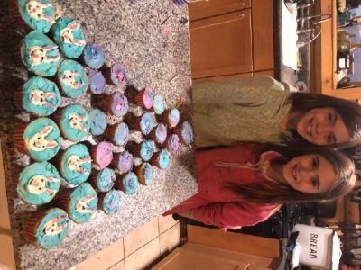
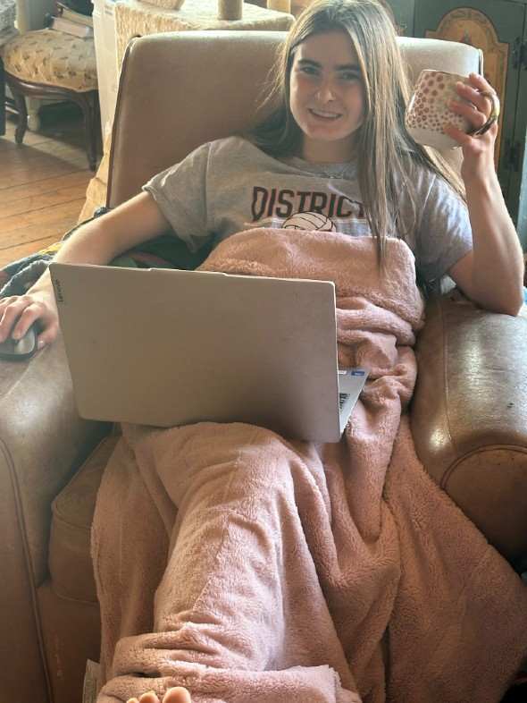

Get to Know Me
My name is Arianna Miller, Ari for short. I have been raised in rural Montana all my life. Living in a small town you have to enjoy the little things and that is one of the reasons I love to bake so much. Each holiday, especially Christmas, my mom would have the music playing while baking pies in the kitchen. Christmas has forever been my favorite holiday because there is always that "magic" in the air. Aside from baking, I love to watercolor and spend time with my pets. I currently have a cat named Milo who is orange and white, as well as a dog named Poppy. I hope my small town roots can inspire other people that you can find love in the little things.

